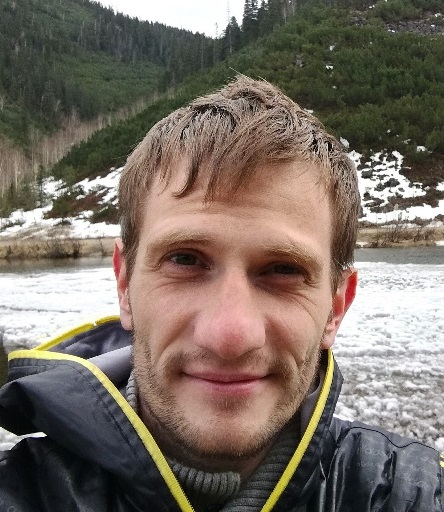

Фамилия: Слободянюк
Имя: Евгений
Отчество: Юрьевич
Страна проживания: Россия
Город: Воронеж
Телефон: +79304244088
E-mail: chilledIMGS@gmail.com
Учебное заведение: ФГБОУ Комсомольский-на-Амуре
Государственный Технический Университет
Уровень, степень: Высшее, бакалавр
Факультет: Экология и химическая технология

Желаемая должность
QA engineer, Test engineer
Занятость: стажировка, частичная занятость, полная занятость
График работы: удаленная работа, гибкий график, полный день, сменный график
Общий опыт работы 10 лет 5 месяцев
QA engineer
Обучение и практика
Июнь 2021 - по настоящее время(4 месяца)
Долностные обязанности:
- Анализ требований и технического задания.
- Разработка тестовых сценариев с применением техник тест дизайна.
- Практическое применение техник тест дизайна: equivalence partitioning, boundary value, pairwise.
- Составление тест комплектов, написание тестовой документации: тест кейсы, чек-листы.
- Написание баг репортов.
- Функциональное тестирование(smoke,sanity,regression).
- Тестирование верстки(HTML) Web сервисов и приложений.
- Тестирование стилей(CSS) Web сервисов и приложений.
- Тестирование API(Postman).
- Написание и применение несложных авто тестов(Postman).
- MySQL - создание, редактирование БД, таблиц, составление запросов с оператором JOIN.
- Нагрузочное тестирование(Jmeter).
- Ознакомительная и практическая работа с бесплатной версией JIRA.
- Работа с системой контроля версий Git, GitHub.
Обучением в данном направлении занимался самостоятельно, на основе ознакомления с материалами находящимися в свободном доступе в сети,
различные ролики в Youtube и статьи с разных сайтов по QA направлению, из прочитанных материалов могу отметить книгу Романа Савина "Тестирование dot com"
Из полученных и освоенных знаний могу отметить:
- Знание и понимание жизненного цикла разработки ПО (SDLC)
- Методологии разработки ПО: Каскадная, V-образная, Спиральная
- Agile подход в разработке ПО и его фрэймворки: XP, Scrum, Kanban
- Знание, понимание и применение на практике техник тест дизайна: equivalence partitioning, boundary value, pairwise
- Виды, типы и уровни тестирования по стадиям, глубине, принципам и исполнению
Оператор-наладчик автоматизированного производственного оборудования
Декабрь 2020 - июнь 2021
(7 месяцев)
МК Воронежский
Должностные обязанности:
- Настройка и регулирование автоматизированного производственного оборудования.
- Установка режимов работы оборудования.
- Контроль производимой оборудованием продукции на наличие отклонений от норм и стандартов.
- Периодическая проверка обслуживаемого оборудования на наличие износа
и неисправностей в узлах, блоках, платах, модулях и механизмах.
- Устранение неисправностей в узлах, блоках, платах, модулях и механизмах.
- Замена вышедших из строя деталей и узлов.
- Тестирование оборудования после завершения ремонтных или регламентных работ по обслуживанию.
Оператор технологических установок нефтеперерабатывающей промышленности
Март 2019 - июль 2020
(1 год 5 месяцев)
ООО "РН-Комсомольский НПЗ"
Должностные обязанности:
- Ведение технологического процесса установки замедленного коксования дистанционно(из центра управления производством)
и в ручном режиме согласно технологическому регламенту и инструкций.
- Отбор проб сырья и выпускаемых продуктов для дальнейшего анализа на соответствие установленным стандартам.
- Ремонт и обслуживание оборудования установки.
- Проведение пуско-наладочных, испытательных работ.
Старший техник группы обслуживания прицельно-навигационного комплекса
Октябрь 2014 - сентябрь 2018
(4 года)
Смешанный авиационный бомбардировочный полк фронтовой авиации
Должностные обязанности:
- Выполнение предполетной подготовки систем воздушного судна в рамках своей специализации
согласно регламента/должностной инструкции:
- Тестовые запуски систем и оборудования;
- Проверка режимов работы и функций систем на отсутствие отклонений и неисправностей;
- Проверка стабильности работы систем в различных условиях;
- Устранение выявленных отказов.
- Обеспечение бесперебойной/безаварийной работы систем.
- Выполнение послеполетной подготовки по завершению летной смены.
- Обслуживание и ремонт систем воздушных судов в рамках своей специализации вне летных смен.
- Тестирование работоспособности систем при приеме воздушных судов после ремонта/регламентного обслуживания.
- Работа с документацией в формате Word/Excel.
- Опыт работы на руководящей должности (ВРИО начальника группы - 4 месяца).
Обо мне
- Ответственно отношусь к выполнению любых обязанностей
- Умею смотреть на вещи и события с разных сторон
- Внимательность к тонкостям и деталям
- Умею аргументированно донести свою точку зрения
- Не конфликтный, способен сглаживать углы
- Умею работать в команде и если нужно организовать ее работу
- Коммуникабелен и открыт для общения, обсуждения
- Всегда готов к получению и освоению новых знаний
- Стремление к развитию и расширению кругозора